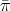

Definition 1 The cone
is the polar of the polyhedron Q = {x  +n : Ax ≤ b}.
+n : Ax ≤ b}.
Valid Inequalities for Integer Programs
John Mitchell
Definition 1 The cone
is the polar of the polyhedron Q = {x +n : Ax ≤ b}.
Proposition 1 Let {xk}
k K and {rj}
jJ be the extreme points and rays of Q. Then Π is the
polyhedral cone defined by
K and {rj}
jJ be the extreme points and rays of Q. Then Π is the
polyhedral cone defined by
Proposition 2 If dim(Q) = n and ≠0 then (,0) is an extreme ray of Π if and only if T x ≤ 0 defines a facet of Q.
Assume we have two valid inequalities for x Q, namely
Definition 2 The inequalities are equivalent if (γ,γ0) = μ(π,π0) for some μ > 0.
Definition 3 If the inequalities are not equivalent and if there exists μ > 0 such that γ ≥ μπ and γ0 ≤ μπ0 then
and (2) dominates or is stronger than (1). A maximal valid inequality is one that is not dominated by any other.
Proposition 3 Let πT x ≤ π
0 be a valid inequality for Q = {x +n : Ax ≤ b}. If Q≠∅
then πT x ≤ π
0 is either equivalent to or dominated by an inequality of the form uT Ax ≤ uT b
for some u +m.
Let P = {x +n : Ax ≤ b} and S = P ∩ ℤn. Assume A is m×n. Denote the entries of A by a
ij.
The Chvatal-Gomory rounding procedure generates valid linear inequalities for S from valid linear
inequalities for P as follows:
+m and construct the following inequality that is valid
for P:
or equivalently
|
| (3) |
Theorem 1 Every valid linear inequality for S can be obtained through a finite number of applications of the Chvatal-Gomory rounding procedure.
It may take many rounds of application of the procedure to produce a particular inequality. The number of rounds is called the Chvatal rank, which is defined in an inductive manner.
Definition 4 A valid linear inequality πT x ≤ π 0 for S has Chvatal rank 0 if it is equivalent to or dominated by a nonnegative linear combination of the inequalities defining P. It has Chvatal rank k if
Theorem 1 is equivalent to the statement that every valid linear inequality for S has finite Chvatal rank.